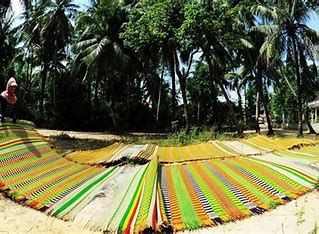
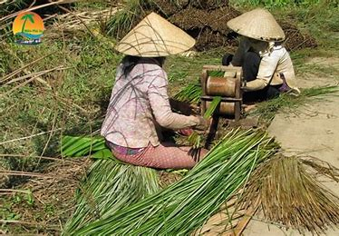
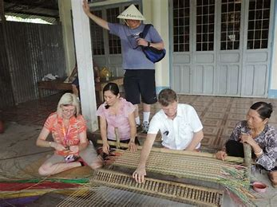

Làng nghề dệt chiếu Nhơn Thạnh, nằm ở huyện Châu Thành, tỉnh Bến Tre. Là một trong những làng nghề nổi tiếng nhất của miền Tây Nam Bộ. Với hơn 100 năm lịch sử. Nghề dệt chiếu tại đây không chỉ mang lại nguồn thu nhập cho hàng ngàn hộ dân. Mà còn góp phần gìn giữ những giá trị văn hóa truyền thống độc đáo của người dân nơi đây. Sản phẩm chiếu Nhơn Thạnh đã trở thành biểu tượng của sự khéo léo và sáng tạo của những người thợ lành nghề.
Nghề dệt chiếu Nhơn Thạnh bắt đầu vào đầu thế kỷ 20, khi người dân tìm kiếm nguồn thu nhập bổ sung cho cuộc sống nông nghiệp. Chiếu được dệt từ các nguyên liệu tự nhiên như sợi lác và sợi đay, với kỹ thuật truyền thống. Dần dần, chiếu Nhơn Thạnh trở thành một phần không thể thiếu trong đời sống hàng ngày của người dân nơi đây. Trải qua nhiều thăng trầm trong lịch sử, nghề dệt chiếu Nhơn Thạnh gặp nhiều khó khăn do chiến tranh. Tuy nhiên, nhờ vào sự kiên trì và khéo léo của người dân, nghề dệt đã phục hồi mạnh mẽ trong thời kỳ đổi mới. Hiện nay, làng nghề dệt chiếu Nhơn Thạnh không chỉ là điểm đến thu hút du khách mà còn là sản phẩm xuất khẩu quan trọng của tỉnh Bến Tre.
Kỹ thuật dệt chiếu tại Nhơn Thạnh hoàn toàn thủ công. Thợ dệt dùng khung dệt truyền thống để tạo ra những sản phẩm với hoa văn đa dạng, phong phú. Công đoạn này đòi hỏi sự khéo léo, tỉ mỉ và kinh nghiệm từ người thợ. Sau khi dệt xong, sản phẩm chiếu sẽ được kiểm tra kỹ lưỡng và đóng gói cẩn thận trước khi đến tay người tiêu dùng. Một số sản phẩm còn được thêu thêm hoa văn để tăng thêm tính thẩm mỹ và giá trị.
